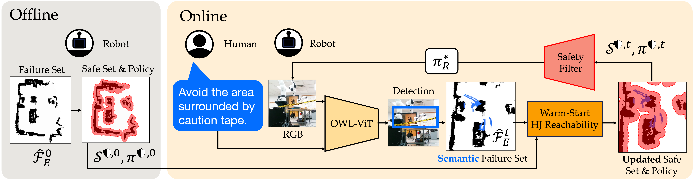

Robots must operate safely when deployed in novel and human-centered environments, like homes. Current safe control approaches typically assume that the safety constraints are known a priori, and thus, the robot can pre-compute a corresponding safety controller. While this may make sense for some safety constraints (e.g., avoiding collision with walls by analyzing a floor plan), other constraints are more complex (e.g., spills), inherently personal, context-dependent, and can only be identified at deployment time when the robot is interacting in a specific environment and with a specific person (e.g., fragile objects, expensive rugs). Here, language provides a flexible mechanism to communicate these evolving safety constraints to the robot. In this work, we use vision language models (VLMs) to interpret language feedback and the robot’s image observations to continuously update the robot’s representation of safety constraints. With these inferred constraints, we update a Hamilton-Jacobi reachability safety controller online via efficient warm-starting techniques. Through simulation and hardware experiments, we demonstrate the robot’s ability to infer and respect language-based safety constraints with the proposed approach.
As robots become more common in human-centered environment, we want them to be able to not only satisfy static and well-defined constraints, such as fixed obstacles, but also personalized and context-dependent safety requirements. Our key idea is to combine vision-language models for semantic constraint inference with efficient warm-started updates of a Hamilton-Jacobi Reachability-based safety controller.
Offline, the robot has an initial failure set which encodes all physical constraints in the environment (e.g. walls, furniture that does not move), and computes the corresponding safe set and safety policy. Online, the person describes their semantic constraint. Using a vision-language model, the robot converts the language-image data into a new failure set. This, along with the previously-computed safe set, are used to efficiently update the safety filter that shields the robot.
BibTex Code Here